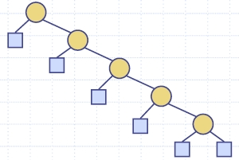

|
- Consider a dictionary with
- items
implemented by means
of a binary search tree of height h
- the space used is O(n)
-
methods findElement(),
insertItem()
and removeElement()
take O(h) time
- The height his O(n) in the worst case and O(log n) in the best case
|